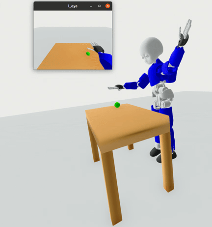

Uchopení míčku (Grasp It!)
Cílem úlohy je uchopit míček ze stolu. Úloha je rozdělena na dvě části:
najít míček na stole v obrazové rovině kamery (míček je v zorném poli robota a je zelený)
uchopit míček: pomocí polohy míčku v obrazu a hloubkové mapy spočítat jeho 3D polohu a uchopit jej rukou

Úkol
Implementujte metody find_the_ball() a grasp() v souboru exercise_5.py. Obě jsou metodami třídy Grasper, která již obsahuje několik užitečných pomocných metod. Po uchopení zvedněte míček tak, aby byl alespoň 5 cm nad stolem.
Třída přijímá dva argumenty:
client– instance třídypyCubovládající simulacieye– název oka s kamerou ('l_eye'nebo'r_eye')
Předepsané rozhraní obou metod:
find_the_ball()– bez argumentů, vrací(u, v)(střed míčku v obrazové rovině)grasp(center)– přijímá jeden argumentcenter(2D střed zfind_the_ball()) a při úspěšném uchopení vrací0
Do třídy můžete libovolně přidávat vlastní metody a atributy, tester však volá pouze find_the_ball() a grasp(). Třída Grasper obsahuje pomocné metody pro získání RGB a hloubkového obrazu, zpětnou projekci 2D bodu do 3D i zavření prstů.
Míček je vždy zelený (0, 255, 0) a má poloměr 2,5 cm.
Bodování
Pokud je míček po návratu z
grasp()alespoň 5 cm nad stolem a v ruce robota, testem projdete.
Požadavky
Pro správnou funkci testeru exercise_5_tester.py:
nevytvářejte nového klienta, použijte předaný argument
clientnepřejmenovávejte
find_the_ball(),grasp()ani souborpo návratu z
grasp()musí být míček alespoň 5 cm nad stolem a držen v ruce robota
Pro správné splnění úlohy:
Nevypínejte gravitaci